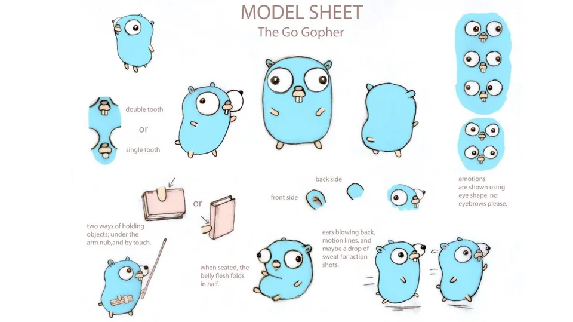

Go言語のマスコットキャラクター
このコミュニティについて
Go言語コミュニティは、Go言語を愛する人たちのためのコミュニティです。加入するためにはGopherの人形を購入することが必要です。
ニュース
- Go言語愛好家グッズを販売しています
- Go言語愛好家グッズを販売しています
- Go言語愛好家グッズを販売しています
コミュニティ概要
| 設立日 | 2023年5月3日 |
| 長 | 市川 詩恩 |
| 所在地 | 横浜国立大学 |
| 会員数 | 70億人 |
Go言語コミュニティは、Go言語を愛する人たちのためのコミュニティです。加入するためにはGopherの人形を購入することが必要です。
| 設立日 | 2023年5月3日 |
| 長 | 市川 詩恩 |
| 所在地 | 横浜国立大学 |
| 会員数 | 70億人 |